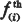
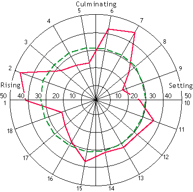
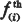

Distribution of Mars at the Birth of 535 Sports Champions

observée
calculée

Since the publication of my first book L'Influence des Astres (The Influence of the Stars) in 1955, I have published numerous works regarding my discovery of a series of highly significant statistical correlations between planetary positions and the birth times of eminently successful people. One of the strongest correlations I have observed is that sports champions tend to be born when the planet Mars is either rising or culminating in the sky much more often than it does for ordinary people (see Figure 1). This particular observation, later called "the Mars effect" by researchers who have investigated it, has been verified by the experiments of other scientists. In this presentation I wish to summarize:
Figure 1. First Discovery of "the Mars Effect"

| Rising | Culminating | Setting | ||||||||||||||||
| Sectors | 1 | 2 | 3 | 4 | 5 | 6 | 7 | 8 | 9 | 10 | 11 | 12 | 13 | 14 | 15 | 16 | 17 | 18 |
| Actual | 41 | 47 | 28 | 24 | 23 | 42 | 46 | 27 | 18 | 26 | 37 | 33 | 33 | 32 | 37 | 29 | 25 | 22 |
| Expected | 33 | 34 | 33 | 33 | 32 | 31 | 31 | 31 | 30 | 30 | 30 | 30 | 31 | 31 | 32 | 32 | 33 | 33 |
Figure 1. Michel Gauquelin's first discovery of "the Mars effect" at the birth of 570 French sports champions. Solid red line: Actual frequencies. Dotted green line: expected frequencies. Sports champions were born more often than ordinary people after the rise of Mars (Mars in the 12th house [Gauquelin's "key" sectors 1 and 2; ed.]) and after the culmination of Mars (Mars in the 9th house [Gauquelin's "key" sectors 6 and 7; ed]). This figure is taken from Michel Gauquelin's first book L'Influence des Astres published in 1955. [Gauquelin used a system of 18 sectors at the time, in reverse order of the astrological houses; later he used a system of 12 sectors, still in reverse order of the houses; ed.]
Initially, my findings were met with incredulity and skepticism from the scientific community. Some authors claimed that my results — the Mars effect in particular — are due entirely to astronomical or demographic artifacts (for example, Jerome, 1973). However, over the years, independent studies by scientists have verified my methods and results. These studies can be divided into two categories, theoretical analysis and empirical control of the experiment.
Two skeptical scientists examined my methodology on theoretical grounds. Dr. Jean Porte, Administrator at the Institut National de la Statistique at des Etudes Economiques (INSEE), Paris, carefully examined my approach in the finding for Mars and sports champions. He states decisively in the foreword to our volume on methods, "I have looked for errors in the present work — and I have found none" (Porte, 1957). Twenty years later, skeptic astronomer Dennis Rawlins produced a memorandum in which he investigated the main methodological objection against the Mars effect — the demographic computation, which Rawlins called "the dawn factor". Rawlins rejects the dawn factor objection on the basis of astronomical computations. He states, "Therefore, one concludes that Gauquelin has made fair allowance for the effect under investigation" (Rawlins, 1978).
The controls of the expected frequencies of the Mars effect have an empirical basis, and this is the other area that skeptical observers observers examined. Generally, these observers were unaware of the numerous controls I had already made, or they were not convinced of them. They wanted to carry out controls for themselves using their own procedures and this desire gave birth to the Comit Para experiment and the Zelen test.
The Belgian Committee for the Scientific Investigation of Alleged Paranormal Phenomena (Comité Para) is composed of scientists, including astronomers, demographers, and statisticians. This committee is strongly opposed to the recognition of any paranormal phenomena, and the Mars effect appeared to them to be a paranormal claim. Not convinced by the statistical proofs I had provided, they decided to gather a fresh group of 535 sports champions from which they obtained quite similar results (see Figure 2).
Figure 2. The Mars Effect and Sports Champions:
Comparison of Gauquelin and Comité Para Results
Figure 2 Sources: M. Gauquelin, Les hommes et les Astres (1960); and in Journal of Interdisciplinary Cycle Research 3 (1972); and Comité Para in Nouvelles Brèves 43 (1976).
Considering that there has been much misunderstanding of the Comité Para's successful replication of the Mars effect, I here include a copy of the table published in the Comité's own report (Comité Para, 1976) (Table 1).
| Classe |
Frequence observée |
Frequence calculée  |
||
|---|---|---|---|---|
| 1 | 68 | 47,7 | +20,3 | 8,64 |
| 2 | 47 | 46,9 | +0,1 | 0,00 |
| 3 | 36 | 45,3 | -9,3 | 1,91 |
| 4 | 51 | 44,0 | +7,0 | 1,11 |
| 5 | 36 | 43,2 | -7,2 | 1,20 |
| 6 | 30 | 42,7 | -12,7 | 3,78 |
| 7 | 36 | 41,6 | -5,6 | 0,75 |
| 8 | 50 | 42,2 | +7,8 | 1,44 |
| 9 | 53 | 43,7 | +9,3 | 1,98 |
| 10 | 54 | 45,2 | +8,8 | 1,71 |
| 11 | 40 | 46,2 | -6,2 | 0,83 |
| 12 | 34 | 46,4 | -12,4 | 3,31 |
| Total : | 535 | 535,1 | 26,66 = c2 |
Explanation of Table 1, from left to right: 1st column: Classe means Sector; 2nd column: Fréquence observée means observed frequency; 3rd column: Fréquence calculée means expected frequency; 4th column: difference between observed and expected frequency; 5th column: square of the difference. For comments, see text. (from Para Committee, 1976, p. 330).
The table compares the observed distribution of Mars in each of the 12 chart sectors for the Comité Para sample (535 champions) compared with the expected distribution, showing the noticeable difference between the two. This difference gives a chi square of 26.66 that, with 11 degrees of freedom, is significant at the .01 level of chi square = 24.7.
The Comité Para report states unequivocally (p. 331), "The distribution of the actual frequencies of Mars is far from uniform, and displays the same general pattern found by M. M. Gauquelin in samples of other sports champions. The main characteristic of this pattern is a clear predominance in sector "1" (rising) above all the others. The Comité Para therefore gives its agreement on this point with the results of M.M. Gauquelin" (Comité Para, 1976).
The Comité Para was very surprised by its own positive results. Jean Dath, Professor of Engineering at the Ecole Royale Militaire of Brussels, and Jean Dommanget, an astronomer at the Brussels Royal Observatory who had worked actively on the project, began to doubt my methods, even though they had accepted them six years earlier. A discussion then ensued on the value of the calculation of expected frequencies, which the Comité Para suspected had a flaw, probably of demographic origin, which could account for the Mars effect by some "normal" cause. The Comité Para thus undertook several counter experiments as a test. The following is the most effective of these experiments.
A crucial test for judging any hypothetical demographic or astronomical bias is to use the same distribution as that of the champions' births (i.e. the same year, month, day, place and time of birth), but to shuffle the times of birth. Each champion keeps his real birth date and place, but is given the birth time of the preceding champion according to alphabetical order. Thus, the test group has exactly the same demographic and astronomical data as the champions' group with real birth times.
The Comité Para repeated this test nine times, each time assigning each champion the birth time of the next previous champion in the original sequence. For example, in the first control test, champion number two keeps his birth data and place, but receives the birth time of champion number one, whereas champion number one receives the birth time of champion number 535, and so on. In the second control test each champion is shifted back two spots in the original sequence so that champion number two receives the birth time of champion number 535, and so on. The results of the test are given in Table 2 (taken from Dommanget, 1970; see also Gauquelin, 1972, 1982).
| Classement alphabetique | |||||||||||
| c1 | ƒ0 | ƒ1 | ƒ2 | ƒ3 | ƒ4 | ƒ5 | ƒ6 | ƒ7 | ƒ8 | ƒ9 | ƒ1.0 |
|---|---|---|---|---|---|---|---|---|---|---|---|
| 1 | 68 | 45 | 55 | 44 | 44 | 56 | 38 | 47 | 50 | 40 | 46.6 |
| 2 | 47 | 50 | 43 | 38 | 46 | 37 | 52 | 49 | 45 | 56 | 46.2 |
| 3 | 36 | 46 | 47 | 52 | 46 | 43 | 45 | 51 | 45 | 42 | 46.3 |
| 4 | 51 | 58 | 44 | 50 | 45 | 54 | 49 | 32 | 53 | 42 | 47.4 |
| 5 | 36 | 35 | 42 | 40 | 42 | 31 | 54 | 44 | 44 | 50 | 42.4 |
| 6 | 30 | 38 | 35 | 50 | 41 | 41 | 31 | 43 | 43 | 46 | 40.9 |
| 7 | 36 | 31 | 48 | 34 | 37 | 44 | 33 | 50 | 37 | 36 | 38.9 |
| 8 | 51 | 36 | 34 | 40 | 52 | 46 | 40 | 44 | 50 | 39 | 42.3 |
| 9 | 53 | 48 | 51 | 52 | 48 | 51 | 46 | 38 | 42 | 40 | 46.2 |
| 10 | 53 | 48 | 45 | 48 | 38 | 40 | 53 | 53 | 40 | 39 | 44.9 |
| 11 | 40 | 54 | 48 | 34 | 49 | 46 | 49 | 42 | 37 | 41 | 44.4 |
| 12 | 34 | 46 | 43 | 53 | 47 | 46 | 45 | 42 | 49 | 64 | 48.3 |
| c2 | 33.0 | 24.9 | 36.1 | 32.2 | 21.6 | 40.8 | 43.1 | 25.8 | 60.4 | 25.4 | |
| P | 0.8% | 3.0% | 0.6% | 0.7% | |||||||
Explanation and comments on Table 2: "Classement alphabetique" means "alphabetical order." The columns, from left to right are as follows: c1 is chart sectors by which Mars is to be tested; ƒ0 is actual distribution of Mars at the birth of the champions; ƒ1 to ƒ9 is distributions of Mars for the nine counter-experiments; ƒ1.9 is the nine counter-experiments taken together (each value is the average of the nine frequencies obtained for each of the 12 sectors). At the bottom of the table, the two lines marked c2 and P refer to chi square and probability. The values are obtained by comparing the actual distribution ƒ0 with each counter-experiment distribution ƒ1, ƒ2, ... ƒ9. The differences are all significant. Those between ƒ0 and ƒ1, ƒ3, ƒ4, ƒ6, ƒ7, and ƒ9 are significant at the .001 level. The comparison between ƒ0 and ƒ1.9 (last column) is significant at .007. (from Dommanget, 1970)
The results show that the Mars distributions for the nine counter-experiments significantly differ from the distribution of Mars for the real birth times of the champions. In conclusion, it is demonstrated that the Mars effect, replicated and tested by the Comité Para, cannot be considered to be an artifact or a demographic error. Moreover, the values found in Table 2, column f1.9 are very close to the theoretical (expected) values I calculated by my methodology, which were used previously by the Comité Para itself (see Table 1, third column).
Surprisingly, this was not the final conclusion of the Comité Para report. In its report, the Comité Para discarded the results of its own counter-experiments. The Comité reasoned that it is "impossible" to calculate any expected frequencies for Mars because the problem is too complicated. The report claims, without being specific, that the Mars experiments make some methodological mistake somewhere. The Zelen test has served to clear up this situation.
Professor Marvin Zelen, now Chairman of the Department of Biostatistics at Harvard University, proposed another experiment that later became known as "the Zelen test" (Zelen, 1976). In Zelen's view, this experiment would prove whether or not the Mars effect can be found for ordinary people just as well as for champion athletes. If it is true, stated Zelen, that the Mars effect is nothing but the consequence of an artifact, then all persons born on the same day and in the same place as the champions ought to have been born in greater numbers at the rise and culmination of Mars.
To test this hypothesis, it was necessary to write to the birth registry offices where the champions were born. The birth times would be requested of everyone born on the same day and year as the champions. Thus, they would be born under the identical astronomical and demographic conditions. Calculation of the Mars positions at the birth times would either prove or disprove the validity of the Mars effect link to champion athletes.
I agreed to carry out the test under the close supervision of Professors Zelen, Kurtz, and Abell. I managed to collect 16,756 birth times of other people born within three days in the same places as 303 sports champions taken from the whole group of 2,088 champions. All the data was gathered in accordance with a very impartial procedure that Zelen was aware of previously.1
When I had gathered the data, I sent Paul Kurtz, Chairman of the American Committee for the Scientific Investigation of the Paranormal (CSICOP) photocopies of all the birth data obtained. The results of the test were published (Gauquelin, 1977). The whole control sample gives an unequivocal answer to the Zelen test. The planet Mars is rising and culminating (in "key sectors") in greater proportion for sports champions than for the total of all other births registered on the same days in the same place as the champions. Figure 3, taken from the Zelen test report, graphically illustrates the main empirical evidence.
Figure 3. Zelen Test

Figure 3. Zelen Test. Mars in Key Sectors for sports champions versus other births. The observed number of sports champion's births with Mars in the key sector (*) is significantly higher than the expected number calculated for non-champions born in the same place, for each of the ±3 days considered. (from Gauquelin, 1977)
At the moment, there is no longer any doubt about the validity of my methodology. Three members of CSICOP, Professors Abell, Kurtz, and Zelen, eventually acknowledged the correctness of the empirical controls. "Gauquelin adequately allowed for demographic and astronomical factors in predicting the expected distribution of Mars sectors for birth times in the general population." (Abell, Kurtz, Zelen, 1983). This acknowledgment caused a considerable stir!
Doubts, however, remained among skeptics. "Nobody could be certain whether sampling bias or perhaps data manipulation had played a role." (Abell, Kurtz, Zelen, 1983). These doubts raised Professor Ertel's curiosity. In order to find out how clean my database was, Ertel traveled from Göttingen University, West Germany, to my laboratory in Paris and checked my files. My most fundamental hypothesis was tested�the higher the rank of professional eminence, the more pronounced the correlated planetary effect would be (Gauquelin, 1955, 1960). This theory of eminence was objectified by Ertel with the help of citation frequencies, a sensitive procedure I myself had not yet used. The entire total of 4,391 sports champions was subjected to this procedure.
The results of this experiment clearly support the eminence theory. Mars effect percentages increase steadily from champions in rank one (lowest) of a citation scale to champions in rank five (highest) (Figure 4). Fudging the data or unintentionally distorting it by bias, Ertel concludes, would never have produced a functional relation, based on a vast amount of specific lexico-biographical and historical information (Ertel, 1988).
Figure 4. Eminence Effect for Mars

Figure 4. The eminence effect for Mars among champions confirmed by Professor Ertel's experiment. Solid red line: Mars Key Sector percentage (m%) for champions of five ranks (5 = highest rank) based on citation frequencies (N=4391). The Mars effect increases when the citation frequencies increase (for details see text). The vertical bars show the ranges of possible chance variation for p=0.95. (The ranges of confidence increase with ranks, which is due to decreasing numbers of individuals [see text]).
Having now heard the testimony of all doubters, who have answered every one of their own arguments with the help of objective experiments, one must reasonably conclude that there is very strong scientific evidence in favor of the reality of the Mars effect.
1. "Michel Gauquelin had long before sent him (Zelen) three detailed descriptions of the sampling procedure which were entirely straightforward and barred Gauquelin himself from influencing the data." (Professor Richard Kammann, 1982).
Abell, G., Kurtz P., Zelen M. (1983). "The Abell-Kurtz-Zelen 'Mars effect' experiments: A Reappraisal." The Skeptical Inquirer, 7 Spring, 77-82.
Dommanget, J. (1970). Preliminary Report of the Para Committee.
Ertel, S. (1988). Raising the Hurdle for the Athletes' Mars Effect: Association Co-varies with Eminence." Journal of Scientific Exploration, 2, 1.
Gauquelin, M. (1955). L'Influence des Astres, Etude Critique et Experimentale, Le Dauphin, Paris.
Gauquelin, M. (1960). Les Hommes et les Astres, Denoël, Paris.
Gauquelin, M. (1972). "Planetary effect at the time of birth of successful professionals, an experimental control made by scientists." Journal of Interdisciplinary Cycle Research, 3, 2, 381-389.
Gauquelin, M. (1982). "Response to the Statement of the Committee Para." Zetetic Scholar, 10, 67-71.
Gauquelin, M. (1983). The Truth About Astrology, Blackwell, Oxford (published in U.S. as: Birthtimes, Hill & Wang, New York, 1984).
Gauquelin, M. (1988). Written in the Stars—The Best of Michel Gauquelin. Aquarian Press, Wellingborough, U.K.
Gauquelin, M., Gauquelin, F. (1977). "The Zelen test of the Mars Effect." The Humanist (November/December), pp. 30-35.
Jerome, L. (1973). "Astrology and Modern Science: A Critical Analysis." Leonardo, 6, 121-129.
Kammann, R. (1982). "The True Disbelievers: Mars Effect drives Skeptics to Irrationality." Zetetic Scholar, 10, 50-65.
Para Committee (Comité Para). (1976). "Considérations critiques sur une recherche faite par M.M. Gauquelin dans le domaine des influences planétaires." Nouvelles Brèves, 43, 327-343.
Porte, J. (1957). Foreword for M.F. & M. Gauquelin: Méthodes pour étudier la Répartition des Astres dans le mouvement diurne, Paris.
Rawlins, D. (1978). "Memorandum on the relation of Mars" solar proximity to M. Gauquelin's Mars-sports results and claims." Phenomena, 2, 2, 22.
Zelen, M. (1976). "Astrology and Statistics, a Challenge." The Humanist, 36, 1, 32-33